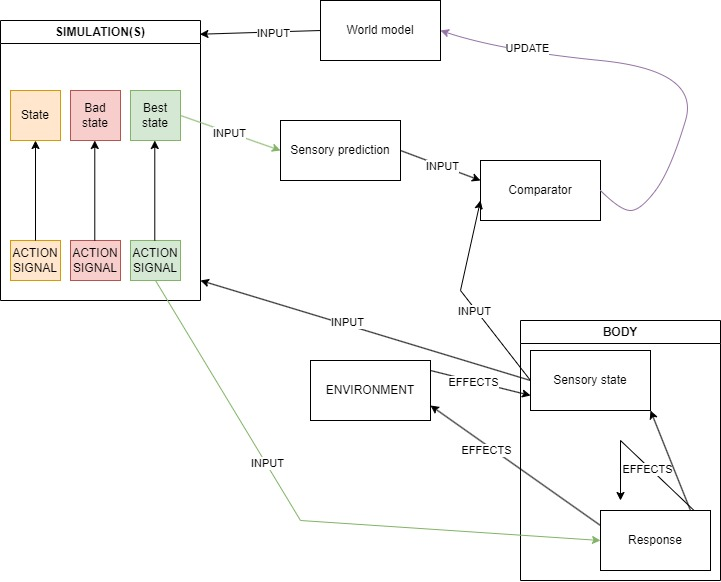

To protect various unpublished works from plagiarism, I make a number of bold assertions in this post that I do not justify here. The aim of this post is to pique the interest of potential collaborators, especially a PhD supervisor.
Much of the earlier material in the post is largely in line with popular 'predictive processing', 'predictive coding' and 'active inference' models of intelligent brain function and perception. However, the minute details really matter when it comes to the philosophical application of these ideas that comprises the later material.
Contents
- Environmental Tracking and Predictive Processing
- How to Plan: model the world and simulate future experiences
- An Illustration: the cat's breakfast
- Lessons for Philosophy: from the intentional stance to the redness of red
- Closing Thoughts
Environmental Tracking and Predictive Processing
It is almost tautologically the case that to do well in the game of evolution, it is always ideal for an organism to be in a physical state that, given the current environmental conditions, makes that organism likely to self-replicate.
Of course, no game is that simple. It is always ideal for a boxer to be in a physical state that, given their opponent's position, is likely to knock the opponent unconscious!
Realistic strategies involve compromise and sacrifice. What do these strategies look like in evolution?
Some organisms follow the bet-hedging strategy. They are never in a particularly optimal state with respect to the current environment, but tend to exist in a (mostly) permanent state that does well enough in many environments. Eventually, this state will become deadly, but usually not before the organism has had many offspring.
Other organisms (highly intelligent ones) instead follow some variant of the environmental tracking strategy. As discussed by Andy Clark in his book The Experience Machine, this strategy was, until recently, thought to work in a largely bottom-up manner. The organism is equipped with sensory organs that collect information about the environment, the organism models and represents the environment, and the organism trusts its representational model, responding to the world as if the model is accurate.
We now have a plethora of reasons to think that the environmental tracking strategy works more like this:
This is, of course, an oversimplification. The full picture would be overwhelming for some readers to look at! I will build upon this as we go along.
While environmental trackers do collect evidence in the form of sensory stimulation, their perceptions are not primarily representations constructed from that evidence in a bottom-up manner, but instead top-down predictions of sensory stimulation.
In the diagram above, this means their experiences of the world are more informed by the 'sensory prediction' box than by the 'sensory state' box.
How to Plan: model the world and simulate future experiences
The primary purpose of sensory stimulation is to update, and thereby improve the quality of, a model of the world that is used to predict one's own sensory states.
Most organisms sit somewhere on a spectrum between the two strategies (and perhaps some alternatives). Trees are the classic example of organisms leaning heavily into the former, while we humans lean heavily into the latter. Certainly, humans have some inherent durability, and trees have some capacity for adapting to the environment mid-lifecycle.
The extent to which we lean into the second strategy is what makes us highly 'intelligent'. We model more of the world in more detail (including more levels of abstraction), and do much more with that model. As I aim to eventually show, this is also what makes us think, believe, desire, feel, and experience subjectivity to a greater extent than 'less intelligent' organisms.
The predictive processing loop, in my view, looks like this:
- The organism's predictive sensory machine enters some state G.
- The organism's sensory organs react to the environment by inducing some state Q in the receptive sensory machine.
- If the organism's comparator doesn't detect a mismatch between the two machine states, the prediction was accurate, which tells the organism something good about the world model.
- If the comparator does detect a mismatch, information about that mismatch is used to update the world model to reduce the likelihood of mismatches in the future. It is also used for backtracking, discussed soon.
- While these comparisons are being made, several simulations are run by the organism. Each simulation has its own sensory state machine, which is initialised to the state of the receptive sensory state machine. What happens to each simulated sensory state is determined by 1) the current world model, and 2) the sequences of action signals it receives from a system akin to Daniel Kahneman's 'fast' and 'intuitive' system 1.
- There are two reasons to run multiple simulations. One reason is to predict the consequences of multiple action signals. The other is to account for the effects of unpredictable influences that, according to the world model, aren't solely controlled by the organism (e.g., wind or the behaviour of other organisms).
- Through a process that can be modeled with a graph search algorithm, an optimal sequence of sensory states is allowed to escape the simulation, becoming the predictive perception of the organism. The action signals expected to cause such states (which can be thought of as the steps of a plan) are also allowed to escape the simulation, entering the body's control systems.
- In the case of a false prediction, an organism doesn't typically abandon its entire current plan, which might have been mostly accurate. It first tries backtracking through the graph constructed by the simulations to see if some of its plan can be salvaged - there might be another pathway from here to the goal state.
- Return to step 1.
An Illustration: the cat's breakfast
Here's that diagram again for reference.
Our example organism is Laika, a fat, strong, fluffy, four-legged animal. Laika has ears, eyes, claws, sharp teeth, muscular limbs, vocal chords, and an almost insatiable appetite.
For Laika, the 'good life' is simple:
- Be nourished and hydrated.
- Be warm, but not too warm.
- Above all else: have lots of kids.
Laika's species has evolved to adapt to a wide variety of possible scenarios by behaving in ways that tend to induce sensory machine states that reliably indicate the fulfillment of these primal needs. These are the fundamental goal states.
The machine enters a specific sub-state when (and only when) the body's average temperature is too low. It enters another such state when (and only when) the stomach is full. Laika's genes drive him to behave in ways that bring about these machine states as often and for as long as possible.
These are complex goals. Many sub-goals follow from them, and will differ from one organism and one situation to the next.
From the womb of Laika's mother, it could not be determined whether Laika would live in a forest (in which satiation would depend on his ability to hunt native birds), or an inner-city flat (in which a large bipedal organism would somehow manage to deliver processed meat twice a day).
The bet-hedging strategy doesn't work for an organism like Laika. Laika, finding himself in one of many possible scenarios, must optimise for that one.
Fast-forward: Laika's sensory state machine is in the state that reliably indicates a certain pattern of activation on his retinas, certain frequencies in his ears, a rumbling stomach, high levels of ghrelin, and low levels of leptin. Laika is hungry, and there is a hairless ape within his field of view that has the power to open bags of biscuits.
A system akin to Daniel Kahneman's 'fast' and 'intuitive' system 1 responds to Laika's sensory state by sending a handful of neural firing patterns, each a series of action signals, into a handful of brain regions ('threads') that each run a simulation of Laika's sensory state machine.
Each thread's behaviour is (ideally) determined by:
- the world model,
- the initial state (Laika's current sensory state)
- the input action signals, and
- variables that, according to the world model, may be altered unexpectedly (e.g. by other agents and/or objects in the world).
The duplicate states on the left represent the fact that each thread has its own sensory state machine. The common states to which they connect represent the fact that the system uses all of these threads to construct a plan in a manner that could be modeled by a graph search algorithm.
State 5 is a goal state, state 2 isn't great, state 3 is decent, and state 4 is really bad.
The difference between state 2 -> state 4 and state 2 -> state 5 is beyond Laika's control, according to his current world model.
State 3 isn't as good as state 5, but the simulation also predicts it to be a low-risk potential sub-goal.
Suppose one of these sequences causes many 'threads' of the simulation (sensory state machines, hooked up to the world model) to undergo sequences of states that end in a bad state. This sequence of action signals must not make it out of the simulation! According to the world model, they will cause the body to interact with the environment terribly.
Another sequence causes many threads of the simulation to undergo sequences of states that end in a goal state. A few of these threads don't end in a goal state, signalling that, according to the world model, certain possible events would prevent these actions from being useful. Laika is not the only agent in the world, and even many non-agents are highly unpredictable. But that's the reality of life! Our plans don't always work - we still attempt them. Many of these threads undergo very similar sequences of states and the common simulated sensory states are likely to becomes temporary sub-goal states.
Something like this sequence of action signals should make it out of the simulation, into the control centers of the body!
Now suppose one action signal, executed in the current sensory state, preceded some sub-goal state in many simulation threads. This signal is sent throughout Laika's body, and that sub-goal state is compared to the state that Laika's sensory state machine enters. The two states are, for the most part, similar. Laika is one step closer to the ultimate goal.
Next, an action signal that, in the new sensory state, reliably induced the next simulated sub-goal state is sent throughout Laika's body. This time, the state of Laika's sensory state machine does not match the expected sub-goal state at all. Something unexpected has happened. If some simulaton threads can explain this fact, Laika should backtrack. Otherwise, he should update his world model.
Perhaps Laika tries backtracking, and the 'next best' action signal from the simulation does lead to a predictive match. Laika is one step closer to the ultimate goal. The last two 'observations' (made by the comparator in the diagram) may even tell Laika something about what is right in the world model and what is wrong.
Maybe Laika ends up at a deadend, failing to find the goal-state. Backtracking has failed. The world model will undergo significant updates, further simulations may be run, and a new sequence of sub-goals may be identified.
Hopefully, Laika soon detects the state that reliably indicates satiation - a goal state. The action signals that have won the competition of neural attention have caused his gaze to meet that of the mysterious bipedal food-giver, his vocal chords to emit an adorable miaow, and his limbs to drag him towards the bag of biscuits by the shelf. The bipedal organism has opened the bag and poured some of its contents into a bowl, eventually consumed by Laika, triggering hormonal responses and a desirable sensory state (for now!).
Lessons for Philosophy
I've seen a lot of these ideas in the sciences. What's this got to do with philosophy, and what do you have to add?
I have reason to believe that the story told above can tell us a lot about qualia, physicalism, intentionality, self-consciousness, higher-order thought theory, strong AI, and metaphilosophy. Here, I will focus on one of these.
Quotation in the Language of Thought
It is highly beneficial for some organisms to evolve a language of thought in which the states of the sensory machines are denoted quotationally. Our phenomenal concepts are quotations of these machine states. (For a very similar account of phenomenal concepts, see Balog, 2012.). This minimizes the probability of making bad updates (i.e., misinformed ones) to a very important model.
Researchers interested in the quotational account of phenomenal concepts haven't explored the connection between predictive processing and mental quotation. This is one reason why many things have gone unnoticed about quotational concepts.
Social Cognition, the Intentional Stance, and Phenomenal Simulation
Quotational concepts would help the organism engage in a highly efficient form of social cognition that involves using one's own sensory state machines to simulate those of other organisms.
Daniel Dennett famously distinguished a number of stances via which intelligent agents can predict the behaviour of objects.
In taking the design stance, an agent assumes that some object has a certain purpose, and predicts that it will behave the way it is supposed to.
In taking the physical stance, an agent assumes that some object has certain properties and that certain laws dictate how the properties of the object interact with those of others. The agent predicts that the properties of the object will obey those laws.
In taking the intentional stance, the agent assumes that the object, like it, takes stances. It has goals and beliefs. It wants those beliefs to be accurate, and to tell it that its goals are being acheived. To these ends, it predicts and modifies the behaviour of its environment.
The kinds of systems most effectively predicted by the physical and intentional stances are highly complex, and both stances require the employment of many resources. Those most effectively predicted via the intentional stance are especially complicated, containing billions of neural structures, themselves taking the intentional stance.
For Laika, it is generally most useful to take the intentional stance towards objects that are quite similar to him. The social relationships between Laika and other members of his species matter a great deal for his evolutionary success. The birds he consumes, in the grand scheme of things, are relatively similar to his species, being far more closely related to him than trees are. They too are modeling and simulating the world, vocalising, responding to patterns of retinal activation, and moving their limbs. They breathe the same air and model the same laws of physics, to some extent. The mysterious bipedal food-giver, a fellow mammal, is even more similar to Laika.
Laika's species could evolve expensive resources with which they can simulate birds and hairless apes, but they already have some expensive resources that, with a little tweaking, could quite effectively allow Laika to take the intentional stance towards such organisms - just as (and largely because) Laika's body has a lot in common with theirs, the part of his body that simulates the world has a lot in common with the parts of their bodies that simulate the world. With a few tweaks of the genome, Laika might be able to simulate the simulations of these other organisms in a manner that is much more projective than the simulation of other kinds of things in the world.
State Quotation Theory: A Physicalist Theory of Phenomenal Consciousness
To keep an already long story as short as possible: this kind of simulation, with the assistance of quotational concepts, would give rise to a host of surprising phenomena. One notable one is what I call essential quotation (similar to John Perry's "essential indexicality"). As Douglas Campbell and I argue in our upcoming paper, it would also explain:
- The epistemic gap (famously explored by Frank Jackson's "Mary's Room" thought experiment, in his knowledge argument against physicalism),
- the explanatory gap,
- the hard problem of phenomenal consciousness,
- the intuition of direct acquaintance with phenomenal properties,
- the intuitive appeal of conceivability arguments against identity theory and physicalism,
- the counterintuitiveness of a purely relational account of qualia,
- the counterintuitiveness of the Frege-Schlick view (a powerful response to the inverted spectrum argument against functionalism), and
- the inter-species phenomenal conceivability and knowledge gaps identified by Thomas Nagel.
Perry's indexical account of phenomenal concepts solves some of these problems, but is subject to a number of objections. The quotational account, we argue, solves all of these while avoiding many of Perry's problems.
Additionally, I argue that the broad picture sketched above helps explain fits very neatly with:
- A compelling solution to known problems with higher-order thought theories of consciousness (see Coleman, 2015 and Picciuto, 2011),
- Campbell's solution to the hard problem of observer consciousness (See A Theory of Consciousness by Douglas Campbell),
- Campbell's 'simbeard' solution to the evolution of altruism (yet unpublished).
Closing Thoughts
Those familiar with many of the issues I've discussed will understand the magnitude of my claim. It has implications for research into blindsight, qualia, intentionality, emotion, mental illness, ethics, AI, and more.
I am looking for a fully-funded PhD program, during which I can explain many of my claims, put them on trial, and explore these issues further.
If you've made it this far, thank you. Learn about my background here and get in touch here.